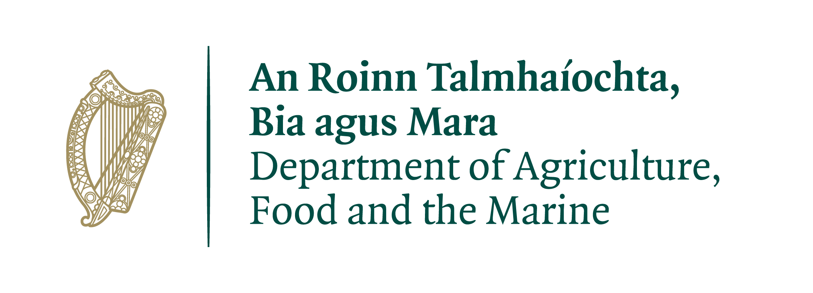

Research MSc: Influence of the forest environment upon forest biodiversity (Task 5.3 of Resilient Forests Project)
Supervisors:
Niall Farrelly (Teagasc),
Jon Yearsley (UCD)
Project description
An ecosystem's biodiversity has been shown to promote the resilience of the services that ecosystem provides (e.g. Isbell et al., 2015; Grange et al., 2021). This graduate research MSc. will use existing data from Teagasc field surveys and data from the National Forest Inventory to quantify forest plant biodiversity in Sitka spruce plantations (from canopy to the forest floor). Using these datasets, we aim to develop a predictive model of Sitka spruce plantation biodiversity.
The research student will:
- be trained to work with biodiversity data and their analysis. Forest biodiversity will be quantified from several viewpoints (e.g. using species richness to accentuate the effect of rare species and Simpson’s index to focus on common species).
- combine the forest biodiversity data with environmental covariates, such as Met Éireann climatic data (1km resolution), landscape features (e.g. aspect and altitude), and soil properties. Spatial models that account for spatial autocorrelation will be used with the compiled database to find environmental conditions that are correlated with the highest forest biodiversity.
- estimate the effect of tree species identity and the interaction between tree species upon forest biodiversity. The impact of the tree diversity upon the broader forest diversity will be modelled using a diversity-interaction framework (Kirwan et al. 2009)
Award
This is a fully funded two-year Research Masters funded by DAFM, including:
- 25000 euro annual stipend
- University fees covered up to 6000 euro per annum
To Apply: (closing date 19th June 2026)
Applicants should submit a CV and covering letter detailing their qualifications and experience to Dr Jon Yearsley at Jon.Yearsley@ucd.ie using the subject line "Resilient Forests research MSc"
Eligibility:
Applicants should have an undergraduate BSc in a science-based subject (forestry/life-sciences/mathematical sciences). Some experience in quantitative topics is highly desirable.
Funding
This work is funded by the Department of Agriculture, Food and Marine (DAFM).
